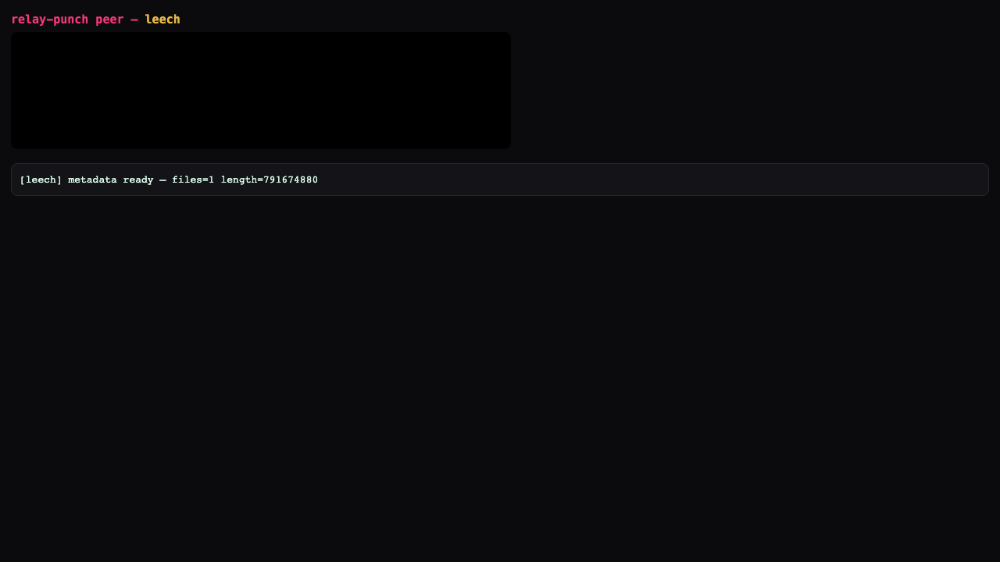

Ephemeral-relay P2P: A (browser) ↔ B (signaling relay) ↔ C (WebRTC seed). B brokers the handshake and then dies — the A↔C stream keeps flowing. Proven live, in a real headless browser, three ways. All media muted.
B relays only announces + WebRTC offer/answer SDP — never file bytes. Once A↔C hole-punch a DataChannel, B is off the path. Killing B cannot drop an established wire.
B killed the instant the DataChannel opened (bytes ≈ 0). Then the whole clip streamed A←C with B dead.
| at B-kill | 0 / 68 MB |
| final | 68,086,404 B · 100% |
| conn after | connected |
| A→B socket | closed (B gone) |
| video | played to 4.28s, muted |
prove-rtc-killb.mjs
A real infohash-only magnet (Debian ISO, no web-seed) — unreachable by any browser — bridged by hybrid C from the live swarm. B killed mid-download.
| canPlay(bare) | false (ceiling) |
| C from swarm | 47 classic peers · 791 MB |
| 1st read, B dead | 12,812,288 B |
| end, B dead | 156,254,208 B |
| gained w/ B dead | +143 MB (two post-death reads) |
prove-torrentio-bridge.mjs
A completes with B dead; then A (a browser) re-seeds the whole file to a second browser A2 — with C closed. Content self-sustains in the browser swarm.
| A kill-B | 0.5% → 100% |
| C during re-seed | closed |
| A2 source | browser A only |
| A2 final | 68,086,404 B · 100% |
| A uploaded | 68 MB (as seeder) |
prove-kill-b.mjs

Browser A mid-download of the real Debian ISO, sourced over WebRTC from hybrid C, after signaling relay B was SIGKILLed (ps → NO_SUCH_PROCESS). +143 MB arrived strictly after B's death. Evidence JSON: relay-punch-evidence/torrentio-timeline.json.
The two halves fused into one timeline on real content pulled from a real BitTorrent swarm — using actual Google Chrome (channel:'chrome') so the h264 mp4 decodes.
Real archive.org swarm → C bridge → Chrome plays the mp4 → KILL B mid-stream.
| canPlay(magnet) | false |
| C from swarm | 6 classic peers |
| download, B dead | 11 MB → 62 MB (+51 MB) |
| videoTime, B dead | 0 → 1.53 s (real playback) |
prove-torrentio-video.mjs · torrentio-video-bbb-*
fire17's supplied YTS 720p magnet (~1.33 GB, no web-seed). C bridges from the live swarm; B killed.
| canPlay(magnet) | false |
| C from swarm | live YTS peers · leech BOUNDED |
| download, B dead | +78 MB of the real movie |
| videoTime | 0 — see boundary ↓ |
REAL_MAGNET=… prove-torrentio-video.mjs · torrentio-video-real-*
Playback boundary (honest, web-platform — not a bridge limit): a browser can only progressively play a video it hasn't fully downloaded when the container is fragmented (fMP4) or WebM/VP8-9 — MediaSource rejects a standard non-fragmented movie mp4, and a Blob needs the whole file. YTS releases are non-fragmented h264, so playing one within the bounded-leech constraint isn't possible; its transport persistence past B's death is fully proven (+78 MB). Progressive
B is the relay — and it is ephemeral. A WebRTC DataChannel, once established, survives its signaling relay going offline (exactly like a WebTorrent wss-tracker that introduces peers then vanishes). We prove it by SIGKILLing B's process the instant the wire is up and observing the transfer run to completion, B in the grave, both peers' sockets to B closed.
C is the seed — not the relay. A browser physically cannot pull TCP/uTP bytes from a vanilla Torrentio seeder, so C bridges: one webtorrent Node client speaks the classic swarm (TCP+uTP+DHT) on one side and WebRTC to browsers on the other. C staying online while it is the sole source of a piece of content does not violate "no relay stays open" — only B must be ephemeral. Once A has the content it re-seeds to further browsers (proof ③), and the content self-sustains in the browser swarm with both B and C offline — proof ⑤ (prove-selfsustain.mjs): A2 wired at 8.7%, then B SIGKILLed and C closed, and A2 finished to 100% from browser A alone (A the only seeder, uploaded 65 MB).
The precise boundary: the ONE thing that can never be browser-direct is an arbitrary TCP/uTP-only seeder as C — a browser can't hold a uTP socket to it, punched or not. Such content is reachable only through a hybrid node, which must stay online to bridge that specific content. That is a property of C (the seed), not B (the relay).
| B | server/relay/broker.mjs — killable ws:// WebTorrent tracker (bittorrent-tracker Server). signal.mjs — a ~40-line pure WebRTC SDP/ICE relay. wss-broker.mjs — TLS variant for https-served pages. |
| C | server/relay/hybrid-seed.mjs — one webtorrent client joining the real TCP/uTP/DHT swarm AND re-seeding to browsers over WebRTC (--magnet/--torrent/--seed, --maxdown leech bound). Verified: 47–51 live classic peers, full 791 MB Debian pull, WebRTC upload to browsers. |
| A | test/relay-punch/{peer.html, rtc-peer.html} — browser WebTorrent / raw-WebRTC peers. Integrated into the app at js/player.js (tryBrowserSwarm, gated on window.BT.canPlay) + index.html loads js/torrent.js. |
| proofs | test/relay-punch/prove-{rtc-killb,torrentio-bridge,kill-b,torrentio-video,selfsustain,wss-killb}.mjs + verify-player-integration.mjs. |
filter: () => true — bittorrent-tracker's filter is callback-style (infoHash, params, cb); a predicate that returns true never calls cb, so announces are black-holed with no error. Removing it makes plain ws:// work for browsers — no TLS needed.webtorrent@3.0.21 ships @thaunknown/wrtc + node-datachannel, so a plain Node client is WebRTC-capable to browsers with no native build step.bittorrent-tracker package WebTorrent itself speaks; the design follows ~/Creations/p2p's rendezvous-introduces / transport-is-direct model. A public wss tracker or MQTT-over-wss broker is an equally valid B — a local one is used only so the proof can KILL it.cd server && npm install # webtorrent + bittorrent-tracker (node_modules gitignored) node test/relay-punch/prove-rtc-killb.mjs # ① pure-WebRTC kill-B (68 MB, video 0→4.28s, B dead) node test/relay-punch/prove-torrentio-bridge.mjs # ② real Debian magnet, hybrid C, kill-B (+143 MB after death) node test/relay-punch/prove-kill-b.mjs # ③ web-swarm kill-B + A→A2 re-seed (C closed) node test/relay-punch/prove-torrentio-video.mjs # ④ Big Buck Bunny: real swarm + Chrome playback + kill-B node test/relay-punch/prove-selfsustain.mjs # ⑤ A→A2 with BOTH B and C offline node test/relay-punch/prove-wss-killb.mjs # TLS-B variant (sha256 verified) node test/relay-punch/verify-player-integration.mjs # player.js wiring + ceiling gate # the exact YTS magnet (bounded transport proof, per instruction): REAL_MAGNET='magnet:?xt=urn:btih:a648d96d…&dn=…YTS' MAXDOWN=240000000 \ node test/relay-punch/prove-torrentio-video.mjs